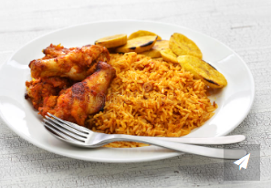

Nigerian Party Jollof

Description
The Nigerian Jollof is a popular style of cooking rice, It originates from Nigeria and known for the taste and uniqueness
The recipe has been for over 100 years and its a signatory for Nigerians
also accepted all over the world by many cultures
Ingredients
- Uncooked Rice
- Groundnut Oil
- Smoked Pepper mixture
- Curry and Thyme
- Tomato paste
- Salt and maggi
- Ginger and Galic
- Chopped Onions
Steps
- Put a pot on fire
- Add Groundnut oil and leave for 5mins
- Add chopped Onions and stir for 3 mins
- Add your ginger and garlic mixture for taste
- Add tomato paste and keep stiring till done
- Pour your pepper mixture and leave to fry
- Add your seasoning (curry, thyme, salt and maggi)
- Add your washed Rice to the stew and stir until its cooked
- Add water and leave to soften
- Add butter and pinch of salt for taste